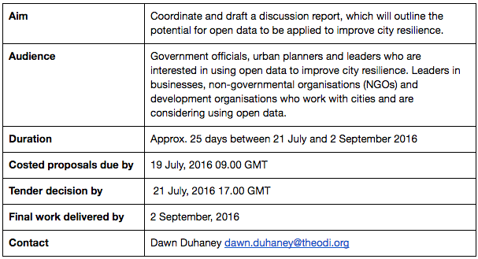
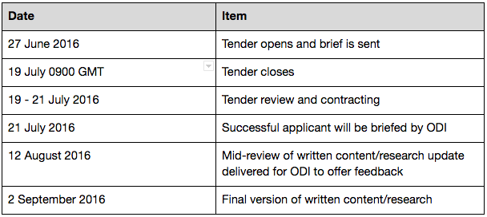

Invitation to tender: Researcher for coordinating ‘Resilient cities’ discussion paper
Call for tenders by the Open Data Institute (ODI) as part of the Open Data for Development Network (OD4D).
The objective of this work is to coordinate a discussion paper and consultation process on the opportunities and challenges of open data to improve resilience in cities worldwide. This ground-breaking research may pave the way for informing city innovation challenges and developing a sector data package, in support of the Open Data Charter.
The researcher will support a team at the ODI, who will provide guidance and overall editorial oversight, on behalf of the OD4D.
The purpose of the report is to outline opportunities, applications and recommendations for open data to improve city resilience – in particular to address development and sustainability issues.

Background
In 2016, cities around the world struggle under the combined pressures of:
Increasing density and population increases (with around 70% of the world’s populations estimated to live in cities by 2050)
Burden on city infrastructure and social services to meet population needs
Rising costs of housing and undersupply of quality low-cost housing options
Environmental pressure related to sustaining a large population amidst climate change and pollution, etc
Ageing urban population and failures around social inclusion in city design
If we are to meet the Sustainable Development Goals, we need to develop more resilient cities. ‘City resilience’ has been described by organisations such as the Rockefeller Foundation as the capacity for cities to function, ensuring all people living and working within them can thrive, regardless of stresses or shocks they encounter, whether manmade or natural.
To scale effectively, cities must join up their regulatory and legal frameworks, create a robust data infrastructure, develop better services that solve problems, and communicate with industry and citizens, startups and stakeholders. More connectivity is needed to ensure that problems in cities are met by solutions, and innovation is not stifled or siloed. Open data is needed to achieve more resilient cities that are effective, inclusive and productive.
To help understand the potential impact of open data on improving city resilience globally, we need to bring together existing case studies, stories and experience. Through this we seek to begin a discussion among policymakers, city planners, technologists and open data experts, to drive changes in policy and practice towards ultimately strengthening city resilience and improving urban life for citizens.
This research tender process is being led by the ODI, an independent, nonprofit, founded by Sirs Tim Berners-Lee and Nigel Shadbolt. The ODI convenes world-class experts from industry, government and academia to connect, equip and inspire people around the world to innovate with data.
Funding for this work is provided by OD4D (with funding from the International Development Research Centre (IDRC), World Bank, Global Affairs Canada and The Department for International Development (DFID)). The Open Data for Development Network (OD4D) is a global network of organisations working together to develop open data-driven solutions to social and economic challenges around the world.
Aims and deliverables
The main deliverable will be research and coordinating a consultation to develop a discussion paper exploring the challenges and opportunities for applying open data to improve city resilience.
The researcher will:
In consultation with key open data stakeholders, policymakers and city sector specialists, define succinct problem statement/s regarding the challenges of city resilience, which open data can help address
Conduct brief desk research on the scale and scope of problem/s related to city resilience, drawing upon existing OD4D research
Analyse use cases demonstrating the variety of different ways in which open data is currently being applied to improve city resilience, from a global perspective (including cities from developing and emerging country contexts)
Interview key experts to further understand use cases, and explore the ongoing challenges and opportunities for applying open data to address city resilience in a global context
Prepare analysis of interviews and desk research, and with the ODI develop findings and questions into a discussion report of around 20 pages in length
Coordinate an open consultation process for gathering feedback and input on the discussion paper
Prepare summaries (slides) for the presentation of findings to present at international workshops
Work collaboratively (using Google docs) and manage feedback from interviewees and the ODI team (in coordination with the ODI). There is an expectation that the researcher will be available to work closely with the ODI point person, which includes face-to-face meetings and being available remotely (eg through Skype, email).
The ODI will:
Provide guidance and a framework for the report
Ensure access to ODI staff and sector leaders with relevant expertise to interview. It will then be the responsibility of the researcher/s to work with ODI contacts to collect additional material.
Audience
The main audience for the discussion paper will be:
Government officials involved in city planning, strategy and leadership, and designing sustainability/resilience policies and programmes
Leaders of business, NGOs and development organisations working to support city resilience already using, or considering using open data in their activities
Open data and technical experts involved in supporting capacity-building, service or application development, or data infrastructure requirements for resilient cities
Form of tender response
Interested parties should submit a costed proposal (in English) to [email protected] by Tuesday 19 July by 9.00 GMT, including:
A curriculum vitae outlining relevant experience (no more than two pages)
A short explanation of your proposed approach to the task (eg methodology, sources), including why you are well-placed to prepare the report (no more than one page)
A writing sample of a similar research report, case study or literature review
Applicant background
The ideal applicant will be:
An experienced researcher, ideally with some background in cities, international development or open data sectors (preferred but not essential)
Familiar with international development, international policymaking and the role of international institutions
Experienced at managing participatory consultation processes
Excellent at delivering high-quality reports to strict deadlines
Able to travel to London frequently to work at the ODI London office
An excellent written communicator, able to follow directions, but also work independently as needed
Decision criteria
Suppliers (or those pitching to supply) will be assessed based on their:
Quality of service and background
Price competitiveness
Commitment to open data, its culture and community
The ODI operates an open procurement process. This means that we may publish data about work that we have contracted.
We reserve the right to publish information such as our supplier’s names, the cost of services we have purchased and related service provision metrics. For example with an IT contract we may make the Service Level Agreement terms and supplier’s performance against them available as open data.
Timeline
Interested parties should submit a costed proposal to [email protected] by 19 July, 2016 by 0900 GMT
The ODI will contact the successful applicant by 21 July 2016.
We request that there are weekly check-ins, and a mid-review of research and written content by 12 August 2016.
The ODI may return with requested edits, and the final version of research and written content will be due by 2 September 2016 at 1700 GMT.

Payment of an agreed contract price will be made only upon satisfactory completion of the case study and any required edits.
If you have any questions about the tender, please contact [email protected].